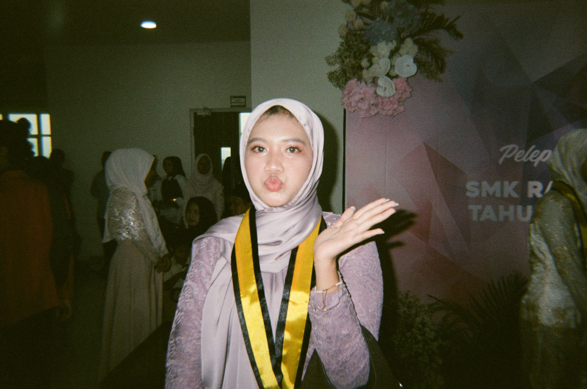

Perkenalkan aku Ayla Syafa Syahira bisa dipanggil Ayla or Shira, mahasiswa Fakultas Ilmu Komputer jurusan Informatika angkatan 2025. Aku lulusan SMK Raden Umar Said Kudus dengan jurusan PPLG/RPL. Punya minat besar terhadap perkembangan AI dan web developer.

aku pernah magang selama 6 bulan(pkl) sebagai junior software engineer di software house 'Esoftplay' di situ kami membuat web dan aplikasi berupa e-rapor. dengan menggunakan framework esoftplaynya sendiri. Bahasa Pemrograman yang dikuasai: dart menggunakan framework flutter untuk apk android, react js untuk website dan bbrp framework lainnya!